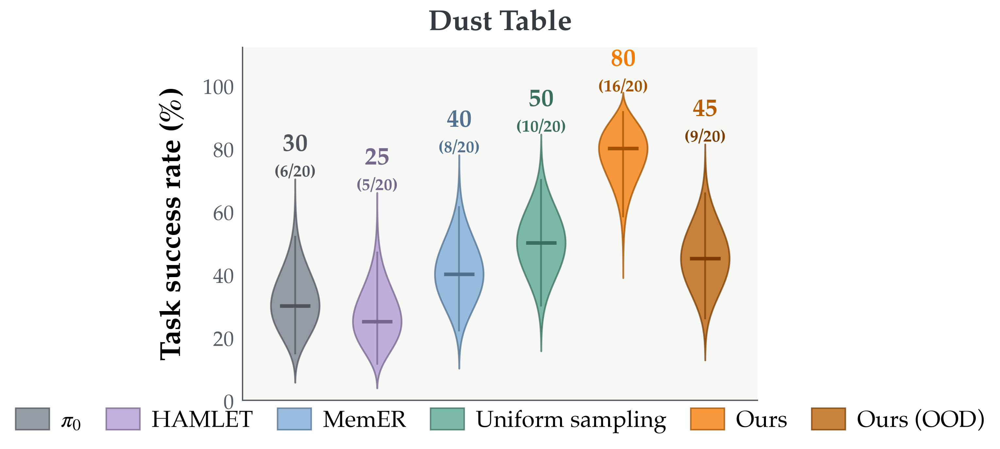

Evaluation
Real-World Evaluation
Select a task, compare the reported result, and browse every associated rollout. Green and red labels indicate success and failure under the paper's evaluation criteria.
The robot must place the objects down upright, dust the table exactly once, and return the objects upright to the small table in the correct left/right arrangement.

Reported task result
Dust Table
Result analysis IMPRINT reaches 80%, 30 points above uniform sampling; the unseen-object setting reaches 45%.
| Method | Success (%) | Successes / trials |
|---|
In-context example
Orange towel · Style 1 demonstration
Automatically matched to the selected rollout’s towel color and folding style.
Method
IMPRINT
16 / 20 successful
Associated trials
Select a rollout
Success Failure
Representative example
MemER keyframes and predicted subtask
- Observation step
- Retained keyframes
Retained keyframe bank
Each checkpoint shows the recorded memory state and accepted subtask prediction from one representative episode.